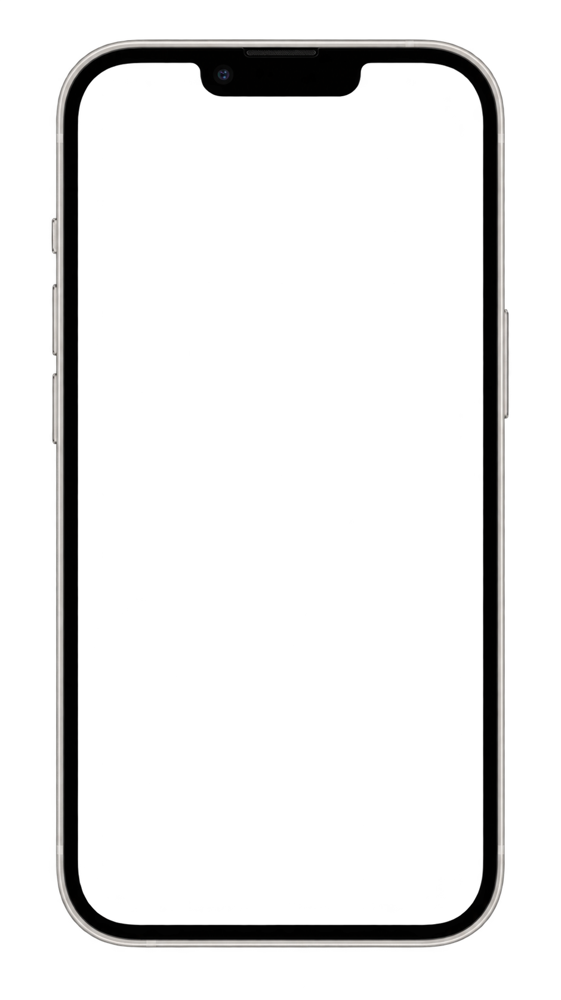

♪
TikTok
LIVE
TikTok LIVE / AR Demo
表情天气
微笑下雨，持续张嘴放烟花。移动头部可将烟花推开。
直播间模拟
模拟预览
开启摄像头
Click the camera on the left
to start your live
9:41
▮▮▮ 5G ▰
Live Weather
LIVE
2,248
个赞
＋ 关注
108
🔥 人气榜
表情天气
↑
送出礼物
×
🌹
玫瑰
🎉
喝彩
🌟
星星
STANDBY
等待触发
